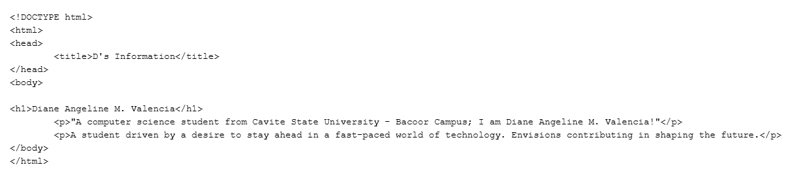
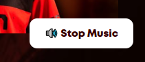
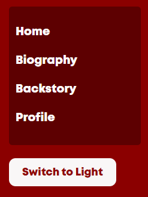
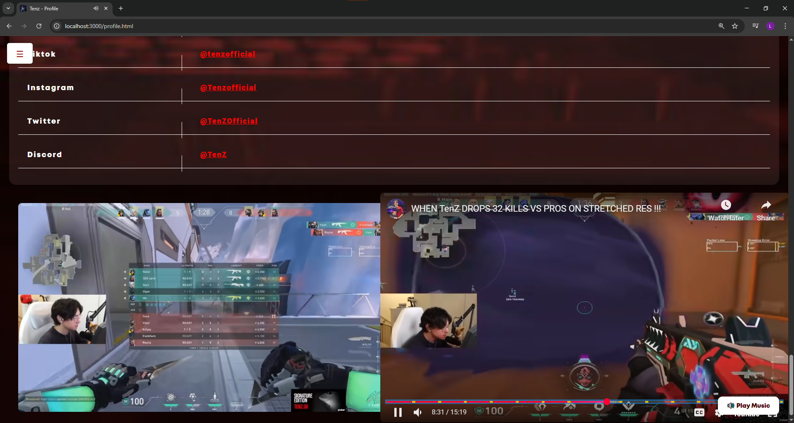
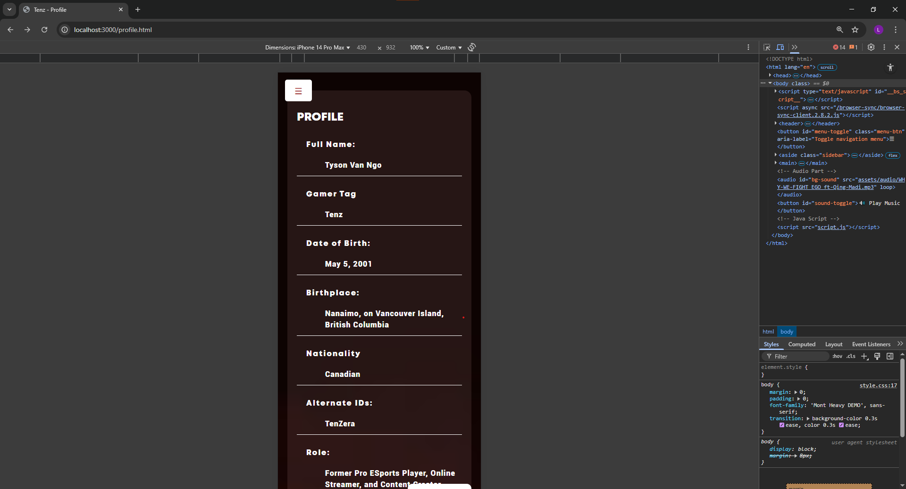

MY GROWTH
- My Growht from first activity to last:
- Throughout Activities 1 to 4, I experienced firsthand how rewarding and challenging the journey into web development can be.
- In Activity 1, I started with the basics—writing pure HTML to build a simple web page. It was my first exposure to structuring content on the web, using elements like headings, paragraphs, and links. This activity gave me a solid foundation and a clearer understanding of how websites begin.
- Moving to Activity 2, I expanded that foundation by making my page more interactive. I learned how to embed images, audio, and video, create lists, and add a navigation bar. It was exciting to see how much more engaging a site becomes with multimedia. Recreating the layout based on reference images helped me develop an eye for design and page structure.
- Activity 3 introduced a whole new layer—CSS. For the first time, I was able to visually style a page, applying colors, spacing, alignment, and typography. What made it even more challenging was that we were given only a picture of a finished website and had to recreate it from scratch, writing both the HTML and CSS ourselves. This tested my attention to detail and deepened my understanding of how code turns into design.
- Finally, in Activity 4, I brought everything together—HTML, CSS, and now JavaScript. I built a fully functional tribute website, complete with multiple pages and interactivity. I wrote my own content, styled the layout, and added dynamic features. It felt like the culmination of everything I had learned so far, and seeing the final result gave me a strong sense of accomplishment.
- Each activity built upon the last, and through them, I grew more confident not just in writing code—but in solving problems, thinking creatively, and expressing ideas through digital design.
LIST OF ACTIVITIES
Activity No. 1:
My Introduction

Content and Learning
- About:
- I built a simple website using only HTML. This was my first step into web development, focusing purely on content structure.
- What I learned:
- I learned how to structure web pages using basic HTML elements like headings, paragraphs, and tags.
Activity No. 2:
Nakano Family
Content and Learning
- About:
- As instructed, I recreated the website based on the reference images provided by Sir Coles. I enhanced the HTML page by adding images, audio, video, lists, and a basic navigation bar to make the site more interactive and engaging. This activity helped me apply foundational HTML skills while exploring how multimedia and structure contribute to better user experience.
- What I learned:
- I learned how to embed multimedia and create navigation, making my web pages more dynamic and user-friendly.
Activity No. 3:
Hoshimachi Suisei Tribute
Top Part
Bottom Part: 3 Media's + Suisei Button Linked to Youtube Channel + Footer
Hover Effect: Budokaan Concert
Hover Effect: The First Take
Hover Effect: McDo Collab
Content and Learning
- About:
- We were challenged to recreate a complete website from scratch using only a reference image provided by Sir Coles. Without any starter code, I had to build the entire structure using HTML, and then style it using CSS to match the layout and design as closely as possible.
- What I learned:
- I learned how to independently apply both HTML and CSS to bring a visual design to life. This activity strengthened my understanding of how to structure content, use proper tags, and apply styling rules like color, font, spacing, layout, and alignment. It also helped me improve my attention to detail and problem-solving skills when translating a static design into functional code.
Top Part of Homepage
Toggle Menu With Navigation
Bottom Part of Homepage
Working Play Sound Button
Hover Effect on Button
Hover Effect on First Media: Picture
Hover Effect on Second Media: Picture
Hover Effect on Third Media: Embedded Youtube Video (Hover Effect + Playable)
Hover Effect on Fourth Media: Embedded Youtube Video (Hover Effect + Playable)
Navigation: Home (Hover Effect)
Switch to Light/Dark Mode Hover Effect
Home Page in Light Mode
Navigation: Biography (Hover Effect)
Biography Content
Biography Media: Embedded Youtube Videos
Embedded Youtube Videos: Hover Effect + Playable
Biography Page in Light Mode
Navigation: Backstory (Hover Effect)
Backstory Content
Embedded Youtube Videos: Hover Effect + Playable
Backstory Page in Light Mode
Navigation: Profile (Hover Effect)
Profile Content
Embedded Youtube Videos: Hover Effect + Playable
Profile Page in Light Mode
Responsive Design
Responsive Design (in Dark Mode)
Responsive Design (in Light Mode)
Content and Learning
- About:
- In Activity 4, we were given the opportunity to create our own tribute website from scratch. We were allowed to choose any person or character as the subject and were guided by a set of instructions to follow throughout the project. This activity required us to write our own content, design the layout and visuals, and build the site using HTML, CSS, and now, for the first time, JavaScript. From researching about the character to designing the site, every part of the website was fully personalized and developed by us.
- What I learned:
- I learned how to plan and execute a full website project independently—starting from research, content creation, and visual design to writing clean code. I practiced integrating JavaScript to add interactivity, enhancing the user experience. This activity helped me understand how to make a website feel like a true extension of its subject’s personality. It taught me to think creatively while still applying the core principles of web development.